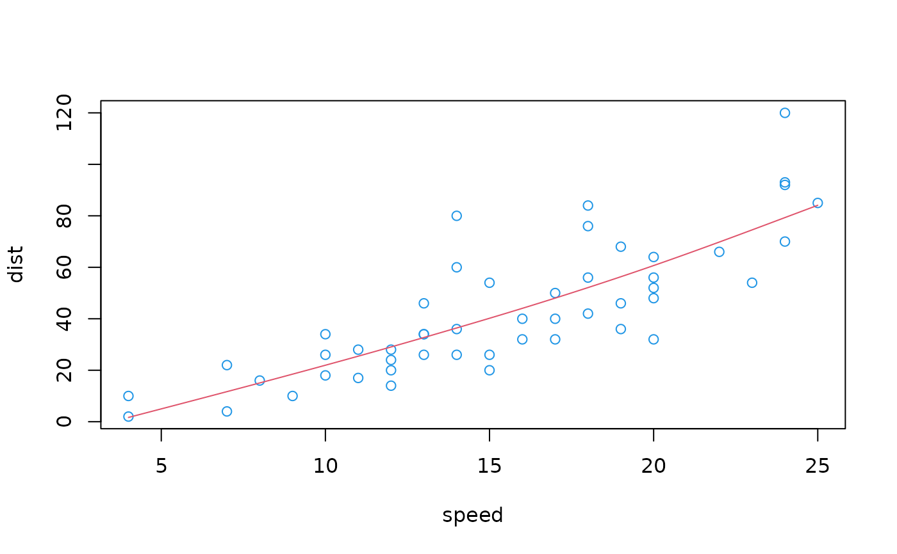

Smoothing spline model with formula-interface
fm_smooth_spline.RdThis is a simple wrapper for smooth.spline() from the stats package.
Usage
fm_smooth_spline(formula, data, weights = NULL, na.action = na.omit, ...)
# S3 method for fm_smooth_spline
predict(object, newdata, ...)Arguments
- formula
A
formulawith only one variable on right hand side.- data
A
data.frame.- weights
Case
weights.- na.action
A function which indicates what should happen when the data contain
NAs.na.omitis the default,na.excludeorna.failcould be useful alternative settings.- ...
Passed to
smooth.spline().- object
Object of class “fm_smooth_spline”.
- newdata
data.framewith the data to be predicted. If missing, predictions for the model data will be returned.
Value
fm_smooth_spline() returns a list of class “fm_smooth_spline” with components
smooth.spline: the fitted spline, of class “smooth.spline”;
formula: the formula;
weights: the fitting weights;
na.action: the
na.actionused during data preparation;call: the matched call generating the model.
See also
smooth.spline (package stats)
Examples
(smooth <- fm_smooth_spline(dist ~ speed, data = cars))
#> Fitted model of class ‘fm_smooth_spline’
#> formula: dist ~ speed - 1
#> data: cars
#> call: fm_smooth_spline(formula = dist ~ speed, data = cars)
#>
#> Smoothing Parameter spar= 0.7801305 lambda= 0.1112206 (11 iterations)
#> Equivalent Degrees of Freedom (Df): 2.635278
#> Penalized Criterion (RSS): 4187.776
#> GCV: 244.1044
newd <- data.frame(speed = seq(min(cars$speed), max(cars$speed), length.out = 100))
plot(dist ~speed, cars, col = 4)
lines(newd$speed, predict(smooth, newd), col = 2)
